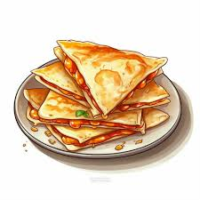
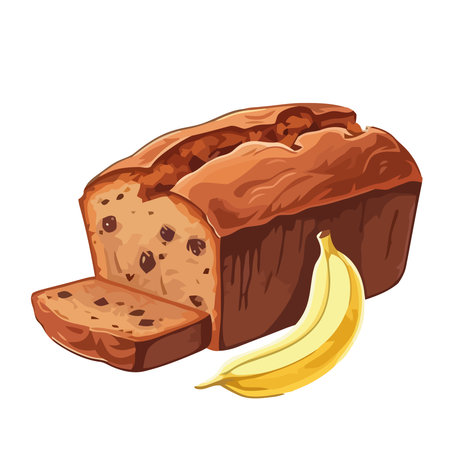
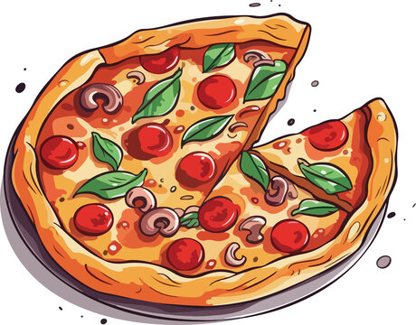

Welcome to Your Mini Kitchen!
Get ready to put on your chef hat and embark on a culinary adventure! Cooking is a fun and rewarding activity that lets you explore new flavors and create delicious food. This page will teach you some basic skills and simple recipes to get you started. Remember, always ask a grown-up for help when using the stove or sharp tools.
Let's Learn the Basics
Kitchen Safety
- Always wash your hands before you start cooking.
- Never touch sharp objects like knives without adult supervision.
- Ask a grown-up for help when using the stove or oven.
- Clean up spills immediately to avoid accidents.
Kitchen Tools
- Mixing bowls: Used to hold ingredients while you mix them together.
- Whisk: Helps you beat eggs or mix liquids smoothly.
- Spatula: Great for flipping food in a pan or scraping batter from a bowl.
- Measuring cups and spoons: Ensures you use the right amount of ingredients for your recipe.
Cooking Methods
- Mixing: Combining ingredients like flour, sugar, and eggs.
- Pouring: Carefully transferring liquids from one container to another.
- Spreading: Smoothing frosting on a cake or peanut butter on bread.
- Cutting: Slicing fruits or vegetables (with adult supervision for harder items).
Ready to Cook? Let's Get Cooking!
1) Yummy Cheese Quesadillas
These cheesy quesadillas are a quick and delicious snack! They're perfect for a fun lunch or after-school treat.
Ingredients (Makes 1 quesadilla):
- 1 tortilla (flour or whole wheat)
- Shredded cheese (cheddar, Monterey Jack, or your favorite kind)
- Optional: Chopped vegetables (bell peppers, onions, etc.)
- Optional: Butter or cooking spray
Instructions:
- With adult help, heat a pan over medium heat.
- Lightly butter the pan or spray with cooking spray (optional).
- Place the tortilla in the pan. Sprinkle half of the cheese on one side of the tortilla.
- Add any optional vegetables you like.
- Fold the tortilla in half to create a half-moon shape.
- Cook for 1-2 minutes per side, or until golden brown and cheese is melted.
- Let it cool slightly before cutting and enjoy your yummy creation!
2) Fruity Yogurt Parfaits

These colorful yogurt parfaits are a healthy and delicious breakfast or snack. You can layer your favorite fruits and toppings for a fun and personalized creation!
Ingredients (Makes 1 parfait):
- ½ cup plain yogurt (or flavored yogurt if you prefer)
- ½ cup granola (or chopped nuts for a nuttier option)
- ½ cup fresh fruit (berries, sliced bananas, mango, etc.)
- Optional: Honey, maple syrup, or a drizzle of chocolate sauce
Instructions:
- Choose a fun glass or bowl for your parfait.
- Add a layer of yogurt to the bottom of the glass.
- Next, sprinkle your favorite granola or chopped nuts on top of the yogurt.
- Add a layer of fresh fruit. Get creative and mix and match different fruits!
- Repeat these layers until your glass is full, ending with either yogurt or fruit on top.
- For an extra touch, drizzle with honey, maple syrup, or chocolate sauce (optional).
- Enjoy your delicious and healthy creation!**
3) Banana Bread
This easy banana bread recipe is perfect for using up ripe bananas and creating a delicious treat. Remember, you'll need adult help for using the oven.
Ingredients (Makes 1 loaf):
- 2 ripe bananas, mashed
- 1 cup all-purpose flour
- ½ cup sugar
- ¼ cup melted butter
- 1 egg
- 1 teaspoon baking powder
- ½ teaspoon baking soda
- ½ teaspoon salt
- Optional: Chopped nuts or chocolate chips
Instructions (with adult supervision):
- Preheat the oven to 350°F (175°C) with adult help.
- In a large bowl, mash the bananas with a fork until smooth.
- In a separate bowl, whisk together the flour, sugar, baking powder, baking soda, and salt.
- With adult help, melt the butter. Add the melted butter, egg, and dry ingredients to the mashed bananas and mix until just combined (don't overmix!).
- Fold in any optional chopped nuts or chocolate chips.
- Pour the batter into a greased loaf pan.
- Bake for 50-60 minutes, or until a toothpick inserted into the center comes out clean. (**Adult to handle the oven!**)
- Let the bread cool completely before slicing and enjoying your delicious creation!**
4) Rainbow Veggie Sticks with Hummus Dip

This colorful snack platter is a fun and healthy way to explore different vegetables!
Ingredients:
- For the Veggie Sticks:
- Carrot sticks (orange)
- Red bell pepper slices (red)
- Cucumber slices (green)
- Yellow bell pepper slices (yellow)
- Sugar snap peas (green)
- Optional: Broccoli florets, cherry tomatoes, etc. (add more colors!)
- For the Hummus Dip: (You can buy pre-made hummus or make your own with adult supervision)
- 1 cup canned chickpeas, drained and rinsed
- 2 tablespoons tahini (sesame seed paste)
- 2 tablespoons olive oil
- 1 tablespoon lemon juice
- Pinch of ground cumin
- Pinch of salt
Instructions:
- Wash all the vegetables carefully with an adult.
- Cut the vegetables into sticks or slices, creating a rainbow of colors on a plate.
- For the Hummus Dip (with adult supervision):
- Combine all hummus ingredients in a blender or food processor.
- Blend until smooth and creamy. Add more olive oil or water if the dip is too thick.
- **OR** You can buy pre-made hummus from the store.
- Serve the veggie sticks with the hummus dip and enjoy your colorful and healthy snack!**
5) Mini Pizzas
These mini pizzas are a fun way to get creative and enjoy your favorite pizza toppings!
Ingredients (Makes about 4 mini pizzas):
- 4 English muffins, halved
- Pizza sauce
- Shredded mozzarella cheese
- Your favorite pizza toppings (chopped vegetables, pepperoni, sausage, etc.)
Instructions (with adult supervision):
- Preheat the oven to 400°F (200°C) with adult help.
- Spread a thin layer of pizza sauce on each English muffin half.
- Sprinkle shredded mozzarella cheese on top of the sauce.
- Add your favorite toppings to each mini pizza.
- With adult help, place the mini pizzas on a baking sheet.
- Bake for 8-10 minutes, or until the cheese is melted and bubbly. (**Adult to handle the oven!**)
- Let the mini pizzas cool slightly before eating. Enjoy your delicious creations!**